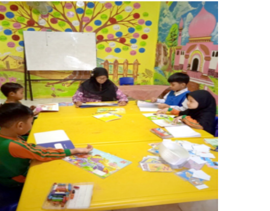

<!doctype html>
<html lang="en">
  <head>
    <!-- Required meta tags -->
    <meta charset="utf-8">
    <meta name="viewport" content="width=device-width, initial-scale=1, shrink-to-fit=no">

    <!-- Bootstrap CSS -->
    <link rel="stylesheet" href="../css/bootstrap.min.css">

    <!-- CSS Kel 12 -->
    <link rel="stylesheet" href="../style.css">
    <link rel="stylesheet" href="../fa/css/all.css">

    <title>Profil TBM Ilham | Kantor Bahasa Provinsi Jambi</title>
  </head>
  <body id="kel12">
  <!-- Navbar -->
  <nav class="navbar navbar-expand-lg navbar-dark nav-top navbar-shrink nav-side">
    <a class="navbar-brand" href="../index.html"></a>
    <button class="navbar-toggler" type="button" data-toggle="collapse" data-target="#navbarNavAltMarkup" aria-controls="navbarNavAltMarkup" aria-expanded="false" aria-label="Toggle navigation">
      <span class="navbar-toggler-icon"></span>
    </button>
    <div class="collapse navbar-collapse" id="navbarNavAltMarkup">
      <div class="navbar-nav ml-auto">
        <a class="nav-item nav-link" href="../Komunitas.html">Komunitas</a>
      </div>
    </div>
  </div>
  </nav>
<!-- Akhir Navbar -->
  
  <!-- Jumbotron -->
  <div class="jumbotron-side">
      <div class="container">
        <h1 class="display-4"> TBM Ilham </h1>
      </div>
  </div>
  <!-- Akhir Jumbotron -->

  <!-- Konten Profil -->
    <div id ="konten" class="container-fluid">
      <div class="container">
        <div class="row profile">
          <div class="col-md-12">
            <h4 class="judul">Profil</h4>
            <div class="kata-pengantar">
              <figure class="foto-rektor">
              
              <figcaption> TBM Ilham</figcaption>
              </figure>
              </div>
              <div class="isi-kata-pengantar">
                <p>Alamat : Jl. Irmija The Kenali Residence B.21 Rt. 44 Kel. Kenali Asam bawah, Kota Baru, Kota Jambi </p>
             
                            <p>Email: willia.wardayanti.mawardi@gmail.com</p>
                                <p>Telp: 0812-6582-2899</p>
                                  
              </div>
          </div>
        </div>
        <div class="row all" style="margin-top: 100px;">
          <div class="col-md-12">
            <h4 class="Judul">Visi,Misi,Tujuan</h4>
            <div class="visi-misi-tujuan">
              <h1>Visi</h1>
              <p> Sebagai pusat informasi, wisata pendidikan, dan sentra pemberdayaan masyarakat. </p>
              <h1>Misi</h1>
              <ol>
                <li> Membangun tradisi baca dan budaya literasi yang asyik dan menyenangkan sebagai sarana pembentukan karakter anak-anak usia sekolah;</li>
                
              </ol>
              <h1>Kegiatan</h1>
              <ol>
                <li>menyediakan sumber informasi yang cepat, tepat, dan murah ;</li>
                <li>story telling;</li>
                <li>mendongeng di kelas;</li>
                <li>memberikan kesempatan kepada masyarakat umum dalam 
                  memperoleh bahan bacaan untuk meningkatkan pengetahuan, 
                  keterampilan, dan budi pekerti;</li>
              </ol>
              
            </div>
          </div>
        </div>
        <a class="btn tombol show-more">Tampil Banyak</a>
        <div class="row all" style="margin-top: 100px;">
        <div class="col-md-12">
          <h4 class="Judul">Sejarah</h4>
          
          <div class="isi-sejarah">
            <p>Taman bacaan masyarakat (TBM) merupakan sebuah wadah 
              yang bertujuan untuk memberikan layanan bahan bacaan bagi 
              masyarakat dalam rangka mendorong dan menumbuh kembangkan masyarakat gemar membaca dan belajar sepanjang 
              hayat guna mengembangkan pengetahuan, keterampilan dan 
              budi pekerti melalui budaya literasi. TBM termasuk salah satu 
              program pemerintah di bidang pendidikan yang ditangani oleh 
              Ditjen Pendidikan Luar Sekolah (PLS) agar dapat menunjang 
              program penuntasan buta aksara dan program pendidikan untuk 
              seluruh masyarakat dalam upaya mencerdaskan kehidupan 
              bangsa. </p>
            <p>Taman baca masyarakat (TBM) Ilham adalah sebuah taman bacaan yang 
              memadukan konsep berbasis pendidikan dengan 
              lingkungan. TBM Ilham bernaung di bawah Yayasan 
              Ilham Hasibuan. Didirikan oleh seorang perempuan bernama Wilia Wardayanti, S.Pi. Latar belakang berdirinya TBM ini berawal dari penglihatan Warda, demikian ia 
              biasa dipanggil, terhadap kurangnya pemahaman masyarakat 
              terhadap budaya literasi. Ia melihat kebanyakan anak-anak 
              mengurung diri di rumah dan lebih banyak menghabiskan 
              waktu dengan bermain gawai. Sejak TBM Ilham hadir, anakanak didiknya cenderung datang lebih cepat untuk membaca 
              buku sebelum waktu belajar dimulai.</p>
             
            </div>
          </div>
        </div>
        <a id="" class="btn tombol show-more">Tampil Banyak</a>
      </div>
    </div>
    <!-- Akhir Konten Profil -->

<!-- Footer -->

<footer>
  <div class="footer-body">
    <div class="container">
      <div class="row">
        <div class="col-md-4 col-sm-6">
          
          <div class="alamat">
            <h6>KANTOR BAHASA PROVINSI JAMBI</h6>
            <p>Jl. Arif Rahman Hakim No.101, Simpang IV Sipin, Kec. Telanaipura, Kota Jambi, Jambi </p>
            <p>(0741) 669466</p>
            <p>Kodepos: 36361</p>
            <p>Posel: bahasajambi@kemdikbud.go.id</p>
          </div>
        </div>
      </div>
    </div>
  </div>
  <div class="footer-bottom">
    <div class="container">
      <div class="row">
        <div class="col-md-9">
          <p class="copyright">© Kantor Bahasa Provinsi Jambi</p>
        </div>
      </div>
    </div>
  </div>
</footer>
<!-- Akhir Footer -->
  
  
    <!-- Optional JavaScript -->
    <!-- jQuery first, then Popper.js, then Bootstrap JS -->
    <script src="https://code.jquery.com/jquery-3.3.1.slim.min.js" integrity="sha384-q8i/X+965DzO0rT7abK41JStQIAqVgRVzpbzo5smXKp4YfRvH+8abtTE1Pi6jizo" crossorigin="anonymous"></script>
    <script src="https://cdnjs.cloudflare.com/ajax/libs/popper.js/1.14.3/umd/popper.min.js" integrity="sha384-ZMP7rVo3mIykV+2+9J3UJ46jBk0WLaUAdn689aCwoqbBJiSnjAK/l8WvCWPIPm49" crossorigin="anonymous"></script>
    <script src="https://stackpath.bootstrapcdn.com/bootstrap/4.1.3/js/bootstrap.min.js" integrity="sha384-ChfqqxuZUCnJSK3+MXmPNIyE6ZbWh2IMqE241rYiqJxyMiZ6OW/JmZQ5stwEULTy" crossorigin="anonymous"></script>
    <script>

    var contents = document.getElementsByClassName("all");
    var buttons = document.getElementsByClassName("show-more");

    for (var i = 0; i < contents.length; i++) {
      // "let" creates locally scoped variables for use in the function.
      let content = contents[i];
      let button = buttons[i];
      button.onclick = function() {
        if (content.className == "open") {
          //shrink the box
          content.className = "all";
          button.innerHTML = "Tampil Banyak";
        } else {
          //expand the box
          content.className = "open";
          button.innerHTML = "Tampil Sedikit";
        }
      };
    }
    </script>
  </body>
</html>